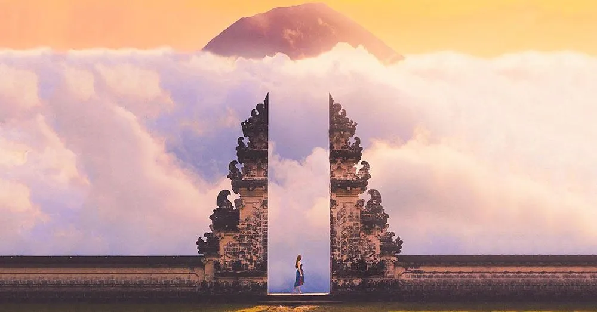
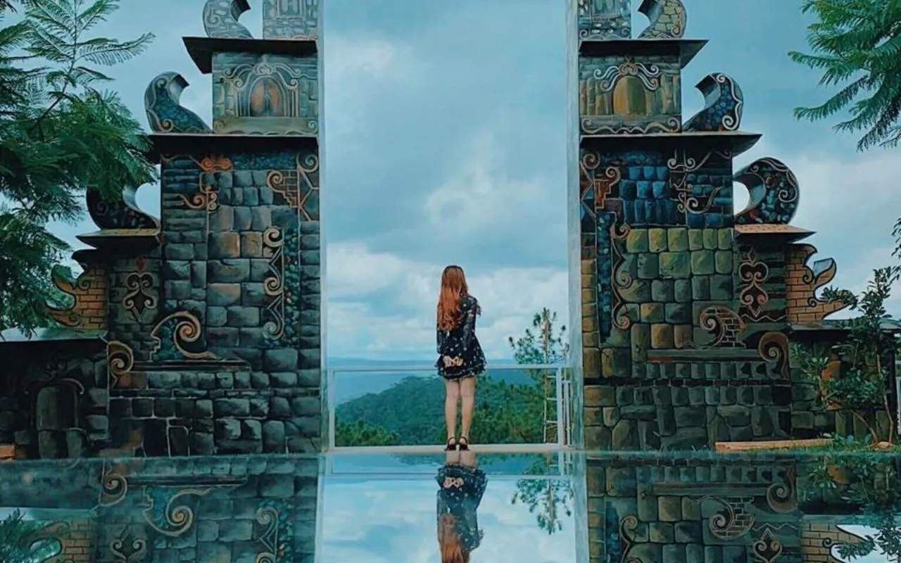
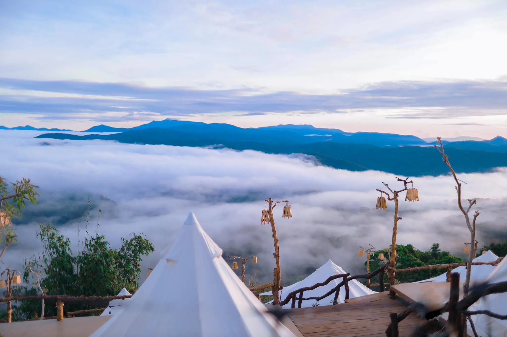
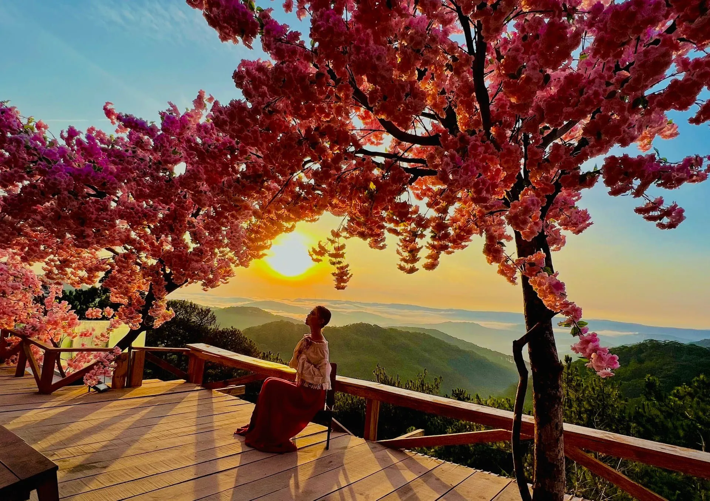
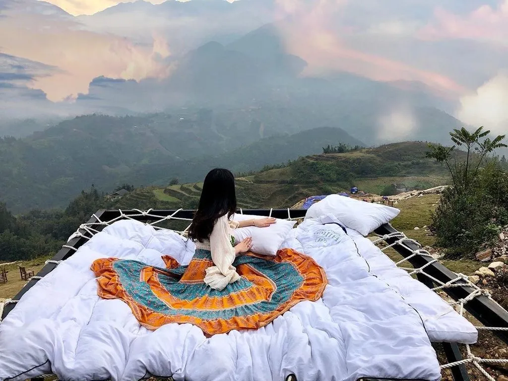

Heaven Gate Bali Da Lat - Beautiful virtual living corner like Bali hot 2025

Table of Contents
- 1. Cổng trời Bali Da Lat cách trung tâm bao xa?
- 2. Hướng dẫn di chuyển đến Cổng trời Bali Da Lat – Green Hills Da Lat
- 3. Thời gian mở cửa và giá vé Cổng trời Bali Da Lat
- 4. Review Cổng trời Bali Da Lat có gì đặc biệt?
- 5. Tips sống ảo “ngàn tim” tại Cổng trời Bali Da Lat
- 6. Lưu ý khi tham quan Cổng trời Bali Da Lat để có trải nghiệm trọn vẹn
- 7. Các địa điểm du lịch gần Cổng trời Bali Da Lat nên ghé thăm
- 8. Gợi ý trải nghiệm ẩm thực gần Cổng trời Bali Da Lat
Da Lat - the city of flowers is not only memorable for its romantic natural scenery and cool climate all year round, but also possesses countless "virtual living" coordinates that attract millions of tourists every year. Among them, a destination that is "making waves" on the tourist map is Bali Green Hills Heaven's Gate - a place likened to "little Bali" in the heart of the Lam Vien plateau.
If you are planning to explore Da Lat to relax, take photos or simply look for a different space, you definitely should not miss this unique place. In the past few years, Bali Heaven Gate has become a "national check-in" point, widely shared on social networks thanks to its paradise-like beauty. Let's explore the interesting things that await you at this super hot destination in the article below!
1. How far is Bali Da Lat Heaven Gate from the center?
Where is Bali Da Lat Heaven's Gate? The address of this famous "virtual living" place is at Da Lat Telpher - Starting Point, Ward 3, Da Lat city, Lam Dong province.
When mentioning the name "Bali Heaven's Gate", many people will immediately think of the legendary architectural work at Pura Lempuyang Luhur temple - a tourism symbol of the "land of thousands of islands" Indonesia. However, now you do not need to fly thousands of kilometers away to admire that beauty, because Da Lat also has its own version of "Bali Heaven's Gate", delicately recreated amidst the poetic nature of the mountain town.
Although located in two different countries, the two projects have many similarities in architecture, space and the emotions they bring. Thanks to that, Bali Heaven's Gate in Da Lat quickly became a hotly sought-after destination for young people and tourists who love "check-in".
Located within the Robin Hill tourist area– also known as Da Lat cable car hill, this location is only about 2.7 km from the city center, very convenient to get around. Amidst the landscape of vast pine forests and rolling mountains, Bali Heaven Gate appears as an enchanting highlight. Although it is smaller in scale than the original in Indonesia, its unique beauty and ability to "take great pictures" makes this place never lose its heat on the tourist map of Da Lat.
2. Instructions for traveling to Bali Da Lat Heaven Gate - Green Hills Da Lat
The journey to Bali Heaven's Gate at Green Hills Da Lat is quite easy and convenient. For more flexibility in exploring tourist destinations, many tourists often choose to rent a motorbike with prices ranging from 80,000 - 120,000 VND/day.
Starting from Da Lat market, you follow Ho Tung Mau street to the roundabout Prenn pass, then turn onto 3/4 street. Continue straight until you see the Inter-Province Bus Station, then observe the signs leading to the cable car area - just follow that road, you will quickly see the image of Bali's Heaven Gate appearing prominently among the mountainous nature.
Although the road is not too complicated, there are a few curves and slopes typical of Da Lat, requiring the driver to have a little skill and caution. If you are unfamiliar with the terrain or want a more comfortable trip, renting a taxi is a safe and reasonable choice to fully enjoy the journey to explore this famous "virtual living" destination.
3. Opening times and ticket prices Bali Da Lat Heaven Gate
Bali Da Lat Heaven's Gate is open to welcome guests from 6:30 a.m. to 10 p.m. every day, convenient for visitors to arrange time to visit and take photos at all hours, especially early morning and sunset - the time when the light is best for "virtual living".
Sightseeing ticket prices here are applied as follows:
-
Adults: 100,000 VND/person (including entrance fee and 1 buffet drink at the resort).
-
Children under 1m: Free ticketscompletely.
In addition, if tourists need to rent outfits for photography (such as vintage dresses, princess dresses, etc.) or rent professional photography services, they will need to pay additional fees depending on the service.
With reasonable prices and many attractive experiences, Bali Da Lat Heaven Gate is a destination not to be missed for those who want to preserve impressive photos amidst beautiful natural scenery.
4. Review What's special about Bali Da Lat's Gate of Heaven?
Although it has only appeared in the past few years, Bali Da Lat Heaven's Gate has quickly become one of the most "feverish" check-in coordinates in the city of flowers. So what makes this place so attractive? Let's explore together!
4.1. The dreamlike "Vietnamese version" of Bali Indonesia's Gate of Heaven

Inspired by the architecture of the famous Pura Lempuyang Luhur temple in Indonesia, Bali Heaven's Gate in Da Lat was built with a majestic design but with a very unique mark of the Lam Dong highlands. In the middle of a spacious space, surrounded by vast green pine forests, the sky gate seems to open a path leading to a fairyland, creating a scene that is both magical and lyrical.
Located on Robin Hill, an area known for its romantic landscape and cool climate all year round, this place has become an ideal destination for tourists to "escape the city" and find a sense of peace and relaxation in nature.
4.2. "Million dollar" view at Bali Da Lat Heaven Gate embracing the mountains and hills of Da Lat

It is not an exaggeration to say that Bali Heaven Gate possesses the most valuable view in Da Lat. Standing here, you will admire the majestic natural panorama - from the rolling hills, the green pine forest to the soaring sky.
Especially, if you visit in the early morning, you will "welcome the new day" with the fog and chilly air typical of Da Lat. When afternoon falls, the sunset dyes everything yellow, making the space here become extremely dreamy and romantic.
4.3. A series of dream-like miniature landscapes, "hold up the camera and get a photo"

Just take a look around social networks, you will see thousands of "million-like" photos checked-in at Bali Da Lat Heaven's Gate. Not only does it have a unique design, this place also owns a calm lake right below, creating a unique mirror effect, making every photo sparkling and magical, as real as a dream.
In addition to the main "sky gate", the campus is also arranged with many well-invested virtual living landscapes such as giant bird's nests, sky swings, valley view cafes... Each corner is a separate concept, giving visitors hundreds of beautiful background options.
Many tourists also shared that: "Just stand in and you'll have beautiful photos", no need for elaborate editing, no need for complicated poses.
5. Tips for a "thousand-hearted" virtual life at Bali Da Lat's Gate of Heaven
If you are looking for secrets to get beautiful photos with "thousands of likes" at Bali Da Lat Heaven's Gate, don't miss the virtual living tips below. With just a few tips, you will immediately have a series of million-heart photos to "show off" on social networks!
5.1 Ideal time to take photos at Bali Da Lat Heaven Gate

The best time to take photos at Bali Da Lat Heaven Gate is in early morning, around 6:30 a.m. to 8:00 a.m. This is the time when the sunlight is gentle, the air is fresh, and the morning dew is still lingering, creating a magical and poetic scene. Natural light in the morning will help your photos become sparkling, without needing too much editing.
📸Small tip: Prioritize going on a sunny or cloudy day to make the sky and scenery more vivid.
5.2 Note the attire when checking-in to Heaven Gate Bali Da Lat

To make the photo stand out and blend in with the natural setting, you should choose the right outfit:
Women: Prioritize long maxi dresses, soft materials, pastel or white colors - helps stand out against the sky and mountains.
Men: Choose simple, dynamic clothes like white shirts, khaki pants, or a gentle boho style outfit.
Don't forget accessories such as: sunglasses, wide-brimmed hats, hand fans, scarves... to add emphasis to the photo. In addition, in the Bali Da Lat Heaven Gate area, there is also a photo costume rental service, very convenient if you want to quickly change your style.
5.3 How to pose for beautiful photos at Bali Da Lat's Gate of Heaven

When you arrive at Bali Da Lat Heaven's Gate, you can refer to some of the following beautiful photography poses to create impressive photos:
-
Make a V shapewith both hands raised above your head, smile brightly, take the photo from below to capture the whole blue sky and the gate behind.
-
Turn your back to the gate, eyes looking into the distance, pose "deep", gentle and full of emotion.
-
Walking in the air: tiptoe up, arms slightly spread, creating the feeling of flying in mid-air - very suitable for the dreamy space here.
💡Pro tip: Create your own pose that shows your personality. Always smile naturally to make the photo more lively and realistic.
6. Note when visiting Bali Da Lat Heaven Gate to have a complete experience
To have a smooth trip and perfect virtual photos at Bali Da Lat Heaven's Gate, you should keep in mind the following notes:
-
Choose the right time: Early morning is the best time to visit. The cool, quiet atmosphere and gentle light will help you easily take impressive photos.
-
Authentic "Balinese" outfit:
-
Women should choose maxi dresses, lace dresses or boho styles to harmonize with nature and the sky's gate scenery.
-
Men can wear simple, neutral or white outfits to easily coordinate and stand out in photos.
-
Respect the common space: When taking photos, you should save time posing so as not to affect the experience of other tourists who are also waiting for their turn.
-
Note when traveling by motorbike: The road to the resort has some steep, winding passes and sections. Please check the vehicle thoroughly, bring a jacket and drive carefully to ensure safety.
-
Edit photos after taking them to increase the "magic": Some popular photo editing applications such as VSCO, Lightroom, Foodiewill make your photos more sparkling and sharper, especially when posted on social networks.
7. Tourist destinations near Bali Da Lat Heaven Gate that you should visit
After checking in at Bali Da Lat Heaven's Gate, don't rush to leave. The surrounding area has many other attractive destinations that are worth exploring:
✅Lea Phong tourist area
A unique destination with a bonsai garden, hundreds of unique flower species and impressive architecture. This is the ideal place to enjoy natural beauty and capture peaceful moments.
✅Da Lat Cloud Lake
Located on a high hilltop, this place not only has a romantic space but also allows you to see the panoramic view of the poetic nature of Da Lat. Sip coffee and chill with the clouds - an experience not to be missed.
✅Lam Vien Square
Outstanding symbol of Da Lat with architectural works shaped like giant artichokes and wild sunflowers. This is an ideal place to take photos and participate in cultural activities and events.
✅Bao Dai Palace II - Heaven Gate Bali Da Lat
A building of special historical value, once the workplace of King Bao Dai. The mansion is imbued with ancient French architecture, located in the middle of a green pine forest - a favorite destination for those who love history and architecture.
##✅Truc Lam Zen Monastery
Located on Tuyen Lam Lake, in the middle of a vast pine forest. This is the ideal place to meditate, breathe fresh air and admire the beauty of traditional Buddhist architecture.
8. Suggested culinary experiences near Bali Da Lat Heaven Gate
After exploring Da Lat Heaven's Gate, stop by * Xom Leo Grill & Chill Shop * to enjoy delicious dishes. The restaurant is famous for its cozy space, rich menu and enthusiastic service team, promising to bring you an unforgettable experience.
📌Address:113 Huynh Tan Phat, Ward 11, Da Lat, Lam Dong 67000
📌Inbox:Here
📌Google Maps:See Directions
📌Hotline:076.45.27.336 – 08.99.42.84.34 – 0902.91.22.40
Da Lat Heaven's Gate is not only a beautiful check-in point but also a place for you to feel the natural beauty and find peace in your soul. In addition to moments of relaxation and admiring the poetic scenery, combine your trip with nearby destinations for a more complete experience. Don't forget to stop by Xom Leo Grill & Chill Shop to complete your trip with a delicious meal. Da Lat is waiting for you with the most wonderful experiences!